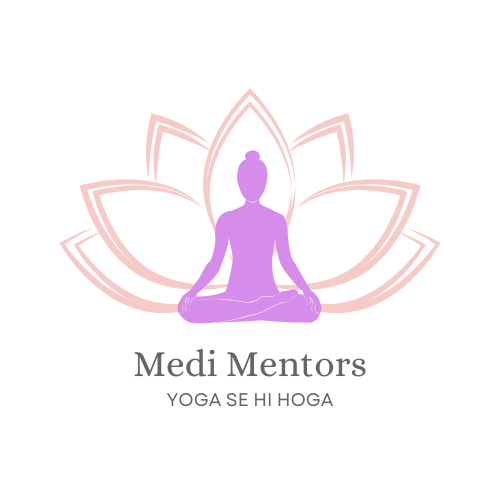

Beginner
Child's Pose (Balasana)
A gentle resting pose that helps calm the mind and stretch the lower back.
⏱️ 1–3 minutes
Benefits:
Stress Relief
Lower Back Stretch
Calming
Corpse Pose (Savasana)
A deep relaxation pose that allows the body and mind to integrate the practice.
⏱️ 5–10 minutes
Benefits:
Deep Relaxation
Stress Relief
Integration
Beginner
Cat-Cow Pose (Marjaryasana-Bitilasana)
A gentle flow between two poses that warms up and stretches the spine.
⏱️ 1–2 minutes
Benefits:
Spinal Mobility
Back Pain Relief
Core Strength